2110A11 manual gearbox with differential - r r for versions with hydraulic selection
- Path
- Procedures > 21 GEARBOX > 2110 MANUAL GEARBOX AND DIFFERENTIAL > 2110A manual gearbox and differential assembly > 2110A11 manual gearbox with differential - r r for versions with hydraulic selection
- Kind
- repair procedure (removal / refitting; the operation number is the code)
- Applies to
- engines: 2.0 TS, 3.2 V6; all production periods
- Interactive page
- https://sloeber94.github.io/elrnDB-a147/en/#/3025122
Applies to: engines: 2.0 TS; all production periods; only with equipment: Cambio robotizzato
 Removing
Removing
 Refitting
RefittingPosition the vehicle on the ramp.
Proceed with removal 5530B10 battery - r+r .
Proceed with removal 5530B52 Battery DRIP TRAY/SUPPORT - R.R. .
Proceed with removal 4450B12 front or rear wheels (two) - r+r .
Proceed with the removal 7055B64 Engine compartment DUST shield in front wheel arch (one), left or right - R.R. (Right and left sides).
Proceed with the removal 7055B42 Additional FRONT WHEEL ARCH (one), left or right - R.R. (Right and left sides).
Proceed with removal 7055B54 under-engine guard - r r .
Proceed with removal 2127C40 hydraulic speed selection hydraulic actuator unit and clutch - r r .
1. Undo the bolt fixing the gearbox side rigid power unit support to the flexbile block to the specified torque.
 | Fastening | Component | Ø | Value (daNm) |
|---|---|---|---|---|
1 | Bolt | POWER UNIT GEAR BOX END RIGID MOUNT | M12 | (Flexible mounting side) 8.8 |
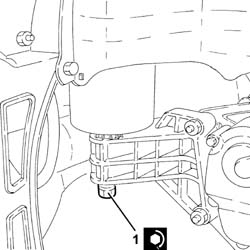
Applies to: engines: 2.0 TS; all production periods; only with equipment: Cambio robotizzato
Proceed with removal 1016A40 ignition coil cover on cylinder head- r+r .
Proceed with removal 1072C44 exhaust manifold heat shield on bulkhead - r+r .
1. Undo nuts (1a) and move bonnet lid catch (1b) aside without disconnecting the bonnet opening cable.
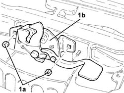
Applies to: engines: 2.0 TS; all production periods; only with equipment: Cambio robotizzato
1. Fit two brackets to the engine to support the power unit the power unit safely as shown in the figure.
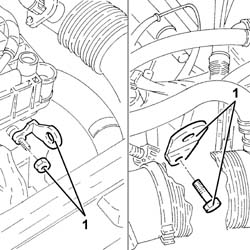
Applies to: engines: 2.0 TS; all production periods; only with equipment: Cambio robotizzato
1. Fit the tool (1a), complete with support mountings (1b).
 | Name | Country |
|---|---|---|
1a | Crossmember | 1.820.581.000 |
| Name | Country |
|---|---|---|
1b | Support mountings | 1.870.650.000 |
2. Fit the tools (2a) and (2b), then connect them using links (2c) to the brackets fitted previously.
| Name | Country |
|---|---|---|
2a | Crossmember | 1.860.851.003 |
| Name | Country |
|---|---|---|
2b | Vertical support | 1.870.748.000 |
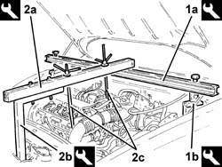
Applies to: engines: 2.0 TS; all production periods; only with equipment: Cambio robotizzato
1. Undo the nut (1a) and disconnect the earth lead (1b) from the gearbox.
 | Name | Connector |
|---|---|---|
1b | Earth on engine |
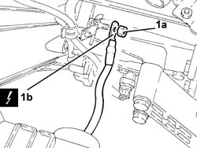
Applies to: engines: 2.0 TS; all production periods; only with equipment: Cambio robotizzato
1. Disconnect the electrical connection for the right Lambda sensor and release the wiring from the fastenings.
| Name | Connector |
|---|---|---|
1 | Lambda sensor on pre-catalyzer |
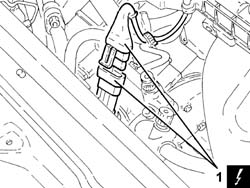
Applies to: engines: 2.0 TS; all production periods; only with equipment: Cambio robotizzato
1. Disconnect the electrical connection for the left Lambda sensor and release the wiring from the fastenings.
| Name | Connector |
|---|---|---|
1 | Lambda sensor on left pre-catalyzer |
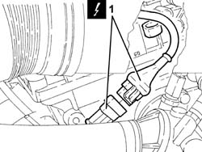
Applies to: engines: 2.0 TS; all production periods; only with equipment: Cambio robotizzato
1. Undo the upper two bolts fixing the manual gearbox and differential to the engine.
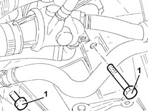
Applies to: engines: 2.0 TS; all production periods; only with equipment: Cambio robotizzato
1. Undo the bolts fixing the driveshafts to the differential internal driveshaft/intermediate driveshaft.
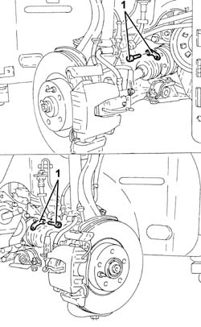
Applies to: engines: 2.0 TS; all production periods; only with equipment: Cambio robotizzato
1. Undo the nuts (1a) and disconnect the front anti-roll bar joints (1b) from the front damper forks.
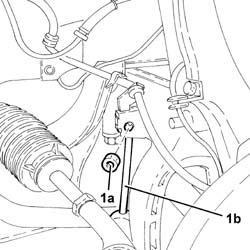
Applies to: engines: 2.0 TS; all production periods; only with equipment: Cambio robotizzato
1. Disconnect the electrical connection from the reversing switch.
| Name | Connector |
|---|---|---|
1 | Reversing lights switch |
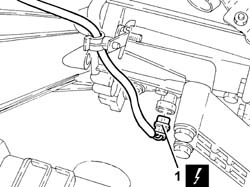
Applies to: engines: 2.0 TS; all production periods; only with equipment: Cambio robotizzato
1. Unscrew the nuts securing the catalytic preconverter to the exhaust manifold.
2. Undo the bolt fixing the catalytic pre-converter to the mounting bracket on the crankcase.
3. Unscrew the nuts securing the catalytic preconverter to the catalytic converter
4. Undo the bolt fixing the catalytic pre-converter flexible mounting to the front suspension crossmember.
5. Remove the catalytic pre-converter complete with Lambda sensors.
Remove the gaskets.
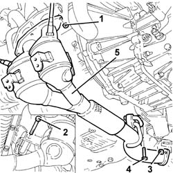
Applies to: engines: 2.0 TS; all production periods; only with equipment: Cambio robotizzato
1. Undo the bolt (1a) and the nut (1b) and remove the reinforcement rod (1c).
2. Undo the bolts securing the flexible block on the power unit rear rigid mounting to the front suspension crossmember.
3. Undo the bolts (3a) and (3b), then remove the power unit rigid rear support (3c) complete with rubber block (3d).
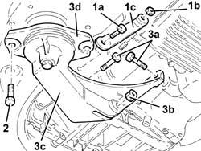
Applies to: engines: 2.0 TS; all production periods; only with equipment: Cambio robotizzato
1. Undo the bolts fixing the front shock absorber forks to the lower track control arms.
2. Undo the nuts (2a) and disconnect the front suspension lower track control arms from the steering knuckles using the tool (2b).
| Name | Country |
|---|---|---|
2b | Extractor | 1.821.169.000 |
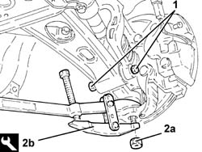
Applies to: engines: 2.0 TS; all production periods; only with equipment: Cambio robotizzato
1. Undo front bolts (1a) and nuts (1b) fixing the manual gear lever mounting.
2. Recover the plates.
3. Slacken the rear bolts fixing the manual gear lever mounting.
4. Lower the gearlever mount as necessary.
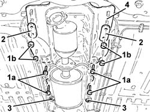
Applies to: engines: 2.0 TS; all production periods; only with equipment: Cambio robotizzato
1. Fit the tool (1a) on the hydraulic jack (1b) to support the front suspension frame.
| Name | Country |
|---|---|---|
1a | Flange | 1.860.978.000 |
2. Undo the bolts securing the power steering box to the front suspension crossmember.
3. Undo the rear bolts fixing the front suspension crossmember to the bodyshell.
4. Undo the side bolts fixing the front suspension crossmember to the bodyshell.
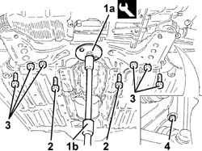
Applies to: engines: 2.0 TS; all production periods; only with equipment: Cambio robotizzato
1. Release the power assisted steering system pipes from the retaining band on the front suspension crossmember.
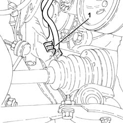
Applies to: engines: 2.0 TS; all production periods; only with equipment: Cambio robotizzato
1. Slowly lower the hydraulic jack and remove the front suspension crossmember (1a) complete with lower track control arms (1b) and anti-roll bar.
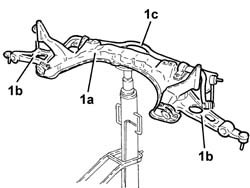
Applies to: engines: 2.0 TS; all production periods; only with equipment: Cambio robotizzato
1. Undo the drain plug and drain the manual gearbox-differential oil.
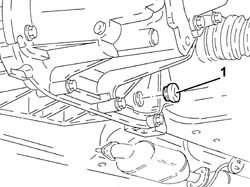
Applies to: engines: 2.0 TS; all production periods; only with equipment: Cambio robotizzato
1. Undo the bolts (1a) and remove the intermediate drive shaft (1b).
2. Remove the dust excluder.
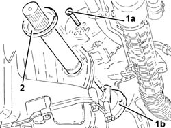
Applies to: engines: 2.0 TS; all production periods; only with equipment: Cambio robotizzato
1. Undo the bolts (1a) and move the starter motor (1b) away from the gearbox, then secure it.
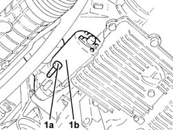
Applies to: engines: 2.0 TS; all production periods; only with equipment: Cambio robotizzato
1. Undo the two bolts fixing the gearbox casing to the bell housing.
2. Fit the tool (2a) on a hydraulic jack and fix it using the bolts removed previously and bolt (2b).
| Name | Country |
|---|---|---|
2a | Support | 1.860.859.002 |
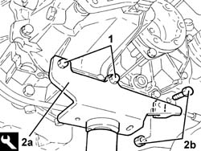
Applies to: engines: 2.0 TS; all production periods; only with equipment: Cambio robotizzato
1. Undo the bolts (1a) and remove the catalytic pre-converter mounting bracket (1b).
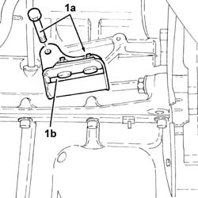
Applies to: engines: 2.0 TS; all production periods; only with equipment: Cambio robotizzato
1. Undo the bolt fixing the manual gearbox and differential to the cylinder block/crankcase.
2. Undo the bolt fixing the manual gearbox and differential to the crankcase oil sump.
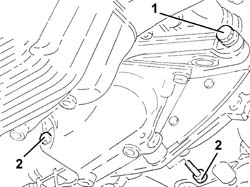
Applies to: engines: 2.0 TS; all production periods; only with equipment: Cambio robotizzato
1. Undo the bolts fixing the gearbox side power unit rigid support to the bodyshell.
2. Undo the bolts (2a) and (2b), then remove the gearbox side rigid power unit support (2c) complete with flexible mounting (2d).
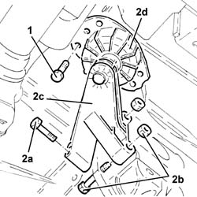
Applies to: engines: 2.0 TS; all production periods; only with equipment: Cambio robotizzato
1. Lower the hydraulic jack and remove the manual gearbox and differential.
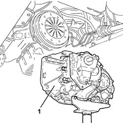
Applies to: engines: 2.0 TS; all production periods; only with equipment: Cambio robotizzato
Refitting
RemovingPlace the manual gearbox and differential back in its housing using the hydrauilc jack and support tool.
1. Tighten the bolts fixing the manual gearbox and differential to the crankcase to the recommended torque.
| Fastening | Component | Ø | Value (daNm) |
|---|---|---|---|---|
1 | Bolt | MANUAL GEARBOX | M12 | (Crankcase side) 7.2 ÷ 8.8 |
2. Tighten the bolt fixing the manual gearbox and differential to the crankcase to the recommended torque.
| Fastening | Component | Ø | Value (daNm) |
|---|---|---|---|---|
2 | Bolt | MANUAL GEARBOX | M10 | (Crankcase sump side) 5.0 ÷ 6.0 |
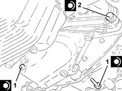
Applies to: engines: 2.0 TS; all production periods; only with equipment: Cambio robotizzato
1. Fit the gearbox side rigid power unit support (1a) complete with flexible mounting (1b) and secure by tightening bolts (1c) and (1d) to the recommended torque.
| Fastening | Component | Ø | Value (daNm) |
|---|---|---|---|---|
1c | Bolt | POWER UNIT GEAR BOX END RIGID MOUNT | M10 | (Manual gearbox/differential side) 4.5 ÷ 5.5 |
| Fastening | Component | Ø | Value (daNm) |
|---|---|---|---|---|
1d | Bolt | POWER UNIT GEAR BOX END RIGID MOUNT | M10 | (Manual gearbox/differential side) 4.5 ÷ 5.5 |
2. Tighten the bolts fixing the power unit gearbox side rigid support flexible mounting to the bodyshell to the recommended torque.
| Fastening | Component | Ø | Value (daNm) |
|---|---|---|---|---|
2 | Bolt | GEARBOX SIDE RUBBER MOUNT | M8 | (Bodyshell side) 3.2 ÷ 3.9 |
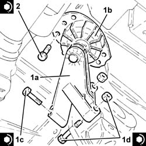
Applies to: engines: 2.0 TS; all production periods; only with equipment: Cambio robotizzato
Place the catalytic pre-converter mounting bracket back in its housing and secure it to the crankcase using the bolts.
Undo the bolts and separate the supporting tool from the manual gearbox and differential, then replace it after having removed it from the hydraulic jack.
| Name | Country |
|---|---|---|
- | Support | 1.860.859.002 |
1. Tighten the bolts fixing the gearbox casing to the bell housing to the recommended torque.
| Fastening | Component | Ø | Value (daNm) |
|---|---|---|---|---|
1 | Bolt | GEARBOX GEAR CASING | M8 | (Mechanical. gearbox.differential upper. side../..)2.3 ÷ 2.8 |
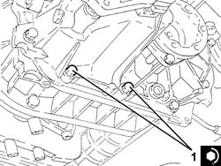
Applies to: engines: 2.0 TS; all production periods; only with equipment: Cambio robotizzato
1. Place the starter motor (1a) back in its housing and fix it tightening the bolt (1b) to the recommended torque.
| Fastening | Component | Ø | Value (daNm) |
|---|---|---|---|---|
1b | Bolt | STARTER MOTOR | M8 | (Gearbox side) 2.4 ÷ 3.0 |
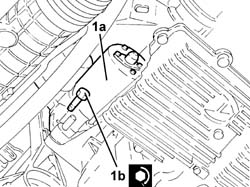
Applies to: engines: 2.0 TS; all production periods; only with equipment: Cambio robotizzato
1. Refit the intermediate drive shaft (1a) in its seating complete with dust excluder and tighten its bolts (1b) to the specified torque.
| Fastening | Component | Ø | Value (daNm) |
|---|---|---|---|---|
1b | - | - | - | - |
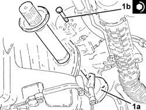
Applies to: engines: 2.0 TS; all production periods; only with equipment: Cambio robotizzato
1. Tighten the manual gearbox and differential fluid drain plug to the recommended torque.
| Fastening | Component | Ø | Value (daNm) |
|---|---|---|---|---|
1 | Plug | GEAR CASING PADS | M22 | 2.9 ÷ 4.3 |
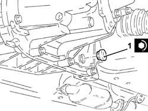
Applies to: engines: 2.0 TS; all production periods; only with equipment: Cambio robotizzato
Use a hydraulic jack with mounting tool to refit the front suspension beam with lower wishbones and anti-roll bar.
| Name | Country |
|---|---|---|
- | Flange | 1.860.978.000 |
1. Tighten the side bolts securing the front suspension crossmember to the bodyshell to the recommended torque.
| Fastening | Component | Ø | Value (daNm) |
|---|---|---|---|---|
1 | Nut | ADJUSTABLE LINK BALL JOINTS | - | (on steering box arm) - |
2. Tighten the rear bolts securing the front suspension crossmember to the bodyshell to the recommended torque.
| Fastening | Component | Ø | Value (daNm) |
|---|---|---|---|---|
2 | Rear bolts | ENGINE OR ROD ANCHORAGE BEAM | M12 | (Bodyshell side) 10.8 ÷ 13.2 |
| Fastening | Component | Ø | Value (daNm) |
|---|---|---|---|---|
2 | Rear bolt | ENGINE OR ROD ANCHORAGE BEAM | M10 | (Bodyshell side) 7.2 ÷ 8.8 |
3. Tighten the bolts securing the power steering box to the front suspension crossmember to the specified torque.
| Fastening | Component | Ø | Value (daNm) |
|---|---|---|---|---|
3 | Bolt | POWER STEERING BOX | M14 | (Front suspension crossmember side) 11.7 ÷ 14.3 |
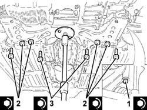
Applies to: engines: 2.0 TS; all production periods; only with equipment: Cambio robotizzato
Remove the hydraulic jack with mounting tool from the front suspension beam.
Secure the power assisted steering system pipes using the band to the front suspension crossmember.
Refit the handbrake control mount and secure with bolts and nuts.
1. Connect the front suspension lower wishbones to the knuckles and secure by tightening the nuts to the required torque.
| Fastening | Component | Ø | Value (daNm) |
|---|---|---|---|---|
1 | Nut | FRONT SUSPENSION LOWER LEVER | M14 | (Steering knuckle side) 8.6 ÷ 9.5 |
2. Tighten the bolts securing the front damper forks to the lower wishbones to the specified torque.
| Fastening | Component | Ø | Value (daNm) |
|---|---|---|---|---|
2 | Bolt | FRONT DAMPER FORK ON WISHBONE | M12 | (Lower track control arm side) 10.8 ÷ 13.2 |
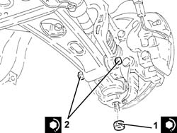
Applies to: engines: 2.0 TS; all production periods; only with equipment: Cambio robotizzato
1. Place the power unit rigid rear support (1a), complete with flexible mounting (1b) back in its housing and secure by tightening bolts (1c) and (1d) and nut (1e) to the recommended torque.
| Fastening | Component | Ø | Value (daNm) |
|---|---|---|---|---|
1c | Bolt | POWER UNIT RIGID REAR MOUNT | M12 | (Gearbox side) 6.8 ÷ 8.3 |
| Fastening | Component | Ø | Value (daNm) |
|---|---|---|---|---|
1d | Bolt | POWER UNIT RIGID REAR MOUNT | M12 | (Crankcase sump side) 6.8 ÷ 8.3 |
| Fastening | Component | Ø | Value (daNm) |
|---|---|---|---|---|
1e | Nut | POWER UNIT RIGID REAR MOUNT | M12 | (Gearbox side) 7.2 ÷ 8.8 |
2. Tighten the bolts securing the flexible block of the power unit rear rigid support to the front suspension beam to the recommended torque.
| Fastening | Component | Ø | Value (daNm) |
|---|---|---|---|---|
2 | Bolt | INTERM RUBBER MOUNT | M8 | (Front suspension crossmember side) 3.2 ÷ 3.9 |
3. Place reinforcement link (3a) back in its housing and secure by tightening bolt (3b) and nut (3b) to the recommended torque.
| Fastening | Component | Ø | Value (daNm) |
|---|---|---|---|---|
3b | Bolt | POWER UNIT RIGID REAR SUPPORT REINFORCEMENT ROD.... | M12 | (Power unit rear rigid mounting side) 6.8 ÷ 8.3 |
| Fastening | Component | Ø | Value (daNm) |
|---|---|---|---|---|
3c | Nut | POWER UNIT RIGID REAR SUPPORT REINFORCEMENT ROD.... | M8 | (Engine crankcase side) 2.4 |
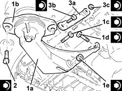
Applies to: engines: 2.0 TS; all production periods; only with equipment: Cambio robotizzato
1. Refit the catalytic converter wtih lambda probes and seals.
2. Tighten the bolt fixing the catalytic pre-converter flexible mounting to the front suspension crossmember.
3. Tighten the nuts fixing the catalytic pre-converter to the catalytic converter to the recommended torque.
| Fastening | Component | Ø | Value (daNm) |
|---|---|---|---|---|
3 | Nut | CATALYTIC PRE-CONVERTER | M8 | (Catalytic converter side) 2.7 ÷ 3.3 |
4. Tighten the bolt fixing the catalytic pre-converter to the mounting bracket on the crankcase.
5. Tighten the nuts fixing the catalytic pre-converter to the exhaust manifold to the recommended torque.
| Fastening | Component | Ø | Value (daNm) |
|---|---|---|---|---|
5 | Nut | CATALYTIC PRE-CONVERTER | M8 | (Manifold side) 2.7 ÷ 3.3 |
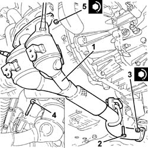
Applies to: engines: 2.0 TS; all production periods; only with equipment: Cambio robotizzato
Connect the electrical connection to the reversing switch.
1. Connect the front anti-roll bar joints (1a) to the front damper brackets and secure them by tightening the nuts (1b) to the specified torque.
| Fastening | Component | Ø | Value (daNm) |
|---|---|---|---|---|
1b | Nut | FRONT ANTI-ROLL BAR JOINTS | M8 | (Front shock absorber fork side.) 4.1 ÷ 5.0 |
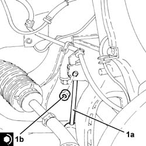
Applies to: engines: 2.0 TS; all production periods; only with equipment: Cambio robotizzato
1. Tighten the bolts fixing the driveshaft to the differential internal driveshaft/intermediate driveshaft to the recommended torque.
| Fastening | Component | Ø | Value (daNm) |
|---|---|---|---|---|
1 | Bolt | DRIVESHAFT | M8 | (Differential. internal. driveshaft./side..) 3.5 ÷ 4.3 |
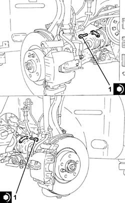
Applies to: engines: 2.0 TS; all production periods; only with equipment: Cambio robotizzato
1. Tighten the upper two bolts fixing the manual gearbox and differential to the engine to the recommended torque.
| Fastening | Component | Ø | Value (daNm) |
|---|---|---|---|---|
1 | Bolt | MANUAL GEARBOX | M12 | (Crankcase side) 7.2 ÷ 8.8 |
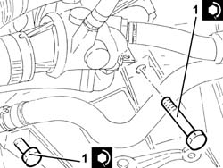
Applies to: engines: 2.0 TS; all production periods; only with equipment: Cambio robotizzato
Connect the electrical connections for the Lambda sensors and fasten the electrical wiring.
Connect the earth lead to the gearbox and fix it using the nut.
Remove the safety tools used for supporting the power unit.
| Name | Country |
|---|---|---|
- | Crossmember | 1.820.581.000 |
| Name | Country |
|---|---|---|
- | Support mountings | 1.870.650.000 |
| Name | Country |
|---|---|---|
- | Crossmember | 1.860.851.003 |
| Name | Country |
|---|---|---|
- | Vertical support | 1.870.748.000 |
Refit the bonnet lid catch and secure with nuts.
Proceed with refitting 1072C44 exhaust manifold heat shield on bulkhead - r+r .
Proceed with refitting 1016A40 ignition coil cover on cylinder head- r+r .
Proceed with refitting 2127C40 hydraulic speed selection hydraulic actuator unit and clutch - r r .
Refill the manual gearbox and differential 2110A04 Manual gearbox and differential OIL - Check level and top up, if necessary .
Proceed with refitting 7055B54 under-engine guard - r r .
Check the leve of the electro-hydraulic gear selection system and top up, if necessary 2127C04 ELECTROHYDRAULIC selection gearbox hydraulic system FLUID - Check level and top up if necessary. .
Bleed the air from the electro-hydraulic gear selector system 2127C06 Electro-hydraulic selection manual gearbox HYDRAULIC SYSTEM - Bleeding air .
Proceed with the refitting 7055B42 Additional FRONT WHEEL ARCH (one), left or right - R.R. (Right and left sides).
Proceed with the refitting 7055B64 Engine compartment DUST shield in front wheel arch (one), left or right - R.R. (Right and left sides).
Proceed with refitting 4450B12 front or rear wheels (two) - r+r .
Proceed with refitting 5530B52 Battery DRIP TRAY/SUPPORT - R.R. .
Proceed with refitting 5530B10 battery - r+r .
Remove the car from the ramps.
Applies to: engines: 3.2 V6; all production periods; only with equipment: Cambio robotizzato
Removing
RefittingPosition the vehicle on the ramp
Proceed with removal 5530B10 battery - r+r .
Proceed with removal 5530B52 Battery DRIP TRAY/SUPPORT - R.R. .
Proceed with removal 1048A10 air cleaner filtering element - replace .
Proceed with removal 7055B54 under-engine guard - r r .
Proceed with removal 2127C40 hydraulic speed selection hydraulic actuator unit and clutch - r r .
Proceed with removal 2127C48 GEAR ENGAGEMENT ELECTRO-HYDRAULIC SELECTION DEVICE - R.R. .
Release the pipe between the selection solenoid valve and the engagement/selection actuator, the pipe between the uneven gear engagement solenoid valve and the engagement/selection actuator and the pipe between the even gear engagement solenoid valve and the engagement/selection actuator from the fastenings and remove them.
1. Undo the connector and disconnect the pipe between the clutch engagement solenoid valve and the clutch hydraulic actuator, clutch hydraulic actuator side.
2. Remove the pipe between the clutch engagement solenoid valve and the clutch hydraulic actuator after having released it from the fastenings.
3. Undo the bolts and move the clutch position sensor as necessary.
4. Disconnect the electrical connection from the clutch position sensor.
| Name | Connector |
|---|---|---|
4 | Clutch position potentiometer |
5. Remove the electro-hydraulic selection gearbox clutch position sensor.
6. Disconnect the electrical connection from the electro-hydraulic gear selection input shaft speed sensor.
| Name | Connector |
|---|---|---|
6 | Data not available yet | K78 |
7. Disconnect the electrical connection from the reversing lights switch.
| Name | Connector |
|---|---|---|
7 | Reversing lights switch |
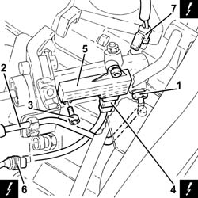
Applies to: engines: 3.2 V6; all production periods; only with equipment: Cambio robotizzato
Proceed with removal 4450B12 front or rear wheels (two) - r+r .
Proceed with removal 7055B90 Left front WHEEL ARCH LINER - R.R. .
Proceed with removal - 7055A43 central front grille - r r .
Proceed with removal 7055A41 RIGHT FRONT GRILLE - R.R. .
Proceed with removal 7210E10 R.R. CENTRE PILLAR .
Proceed with the removal - 5540B16 FRONT LIGHT CLUSTER with direction indicator (one), left or right - R.R. , bearing in mind that it is not necessary to lower the front bumper since it has already been removed.
Proceed with removal 7025A34 bonnet lid lock (one) - r+r or repair .
Proceed with removal - 7090G06 HEADLAMP HOUSING CONNECTING CROSSMEMBER - Replace. .
Proceed with removal 1088E11 fans with single engine duct - r+r .
1. Undo the fixing bolts (1a) and remove the radiator/condenser lower duct (1b).
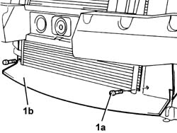
Applies to: engines: 3.2 V6; all production periods; only with equipment: Cambio robotizzato
1. Disconnect the battery earth lead from the gearbox.
| Name | Connector |
|---|---|---|
1 | Battery earth |
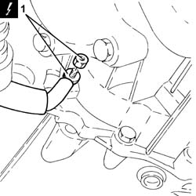
Applies to: engines: 3.2 V6; all production periods; only with equipment: Cambio robotizzato
Proceed with removal 1008C10 power unit upper reaction link r r .
Remove the starter motor heat shield protection.
1. Disconnect the electrical connections from the starter motor.
| Name | Connector |
|---|---|---|
1 | Starter' motor |
2. Undo the bolts (2a) and remove the starter motor (2b).
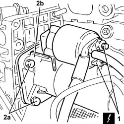
Applies to: engines: 3.2 V6; all production periods; only with equipment: Cambio robotizzato
Proceed with removal 1076B82 left exhasust pipe between catalytic preconverter and converter r r .
Proceed with removal 1076B84 right exhaust pipe between caralytic preconverter and converter r r .
1. Unscrew the bolts securing the right drive shaft to the intermediate shaft flange.
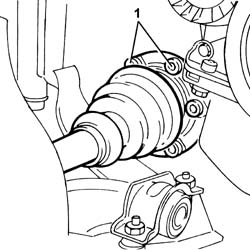
Applies to: engines: 3.2 V6; all production periods; only with equipment: Cambio robotizzato
1. Unscrew the bolts securing the left drive shaft to the flange on the differential inner drive shaft.
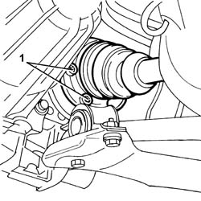
Applies to: engines: 3.2 V6; all production periods; only with equipment: Cambio robotizzato
1. Fit the tool (1a), complete with support mountings (1b).
| Name | Country |
|---|---|---|
1a | Crossmember | 1.820.581.000 |
| Name | Country |
|---|---|---|
1b | Support mountings | 1.870.650.000 |
2. Fit the tools (2a) and (2b), then connect them to the engine using link (2c).
| Name | Country |
|---|---|---|
2a | Crossmember | 1.860.851.003 |
| Name | Country |
|---|---|---|
2b | Vertical support | 1.870.748.000 |
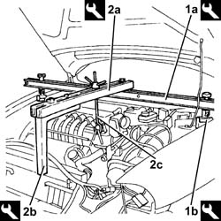
Applies to: engines: 3.2 V6; all production periods; only with equipment: Cambio robotizzato
1. Undo the nuts (1a) and disconnect the steering rod arms (1b).
2. Undo the nuts (2a) and disconnect the lower track control arms from the steering knuckles using the tool (2b).
| Name | Country |
|---|---|---|
2b | Extractor | 1.821.169.000 |
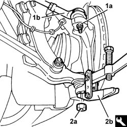
Applies to: engines: 3.2 V6; all production periods; only with equipment: Cambio robotizzato
Undo the drain plugs and drain the manual gearbox-differential oil.
Tilt the wheel hubs forward as far as possible to move the drive shafts away from the differential.
1. Undo the bolts (1a) and remove the intermediate drive shaft (1b).
2. Remove the dust excluder.
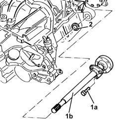
Applies to: engines: 3.2 V6; all production periods; only with equipment: Cambio robotizzato
1. Undo the bolts (1a) and remove the engine flywheel protection (1b).
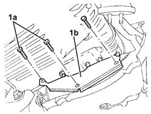
Applies to: engines: 3.2 V6; all production periods; only with equipment: Cambio robotizzato
1. Undo the bolts fixing the manual gearbox and differential to the engine, with the exception of the one at the back near the right flange on the differential.
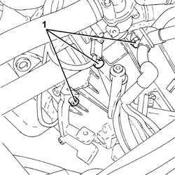
Applies to: engines: 3.2 V6; all production periods; only with equipment: Cambio robotizzato
Proceed with removal 1008A42 gear box left rigid mount - r r .
1. Fit the tool (1a) on a hydraulic jack (1b), then secure it to the gearbox-differential
| Name | Country |
|---|---|---|
1a | Mount | 1.870.826.000 |
Applies to: engines: 3.2 V6; all production periods; only with equipment: Cambio robotizzato
Proceed with removal 1008A44 rear rigid mount - r r .
1. Undo the remaining bolt fixing the manual gearbox and differential to the engine.
Applies to: engines: 3.2 V6; all production periods; only with equipment: Cambio robotizzato
After lowering the engine slightly, move it simultaneously toward the front of the car to prevent it fouling against the body. Withdraw the gearbox and remove from the engine bay by lowering the hydraulic jack.
Proceed with removal 1810A24 clutch - r + r with gearbox removed .
Applies to: engines: 3.2 V6; all production periods; only with equipment: Cambio robotizzato
Refitting
Removing.Proceed with refitting 1810A24 clutch - r + r with gearbox removed .
1. Lift up the tapered seal (1a) for the clutch release bearing until the spring (1b) is covered.
2. Fit the clutch release bearing (2a) on the main shaft and match it with the clutch release fork (2b).
Applies to: engines: 3.2 V6; all production periods; only with equipment: Cambio robotizzato
Replace the gearbox and differential in its housing using the hydraulic jack and tool.
| Name | Country |
|---|---|---|
- | Mount | 1.870.826.000 |
Tighten the bolts fixing the gearbox and differential to the engine to the recommended torque.
| Fastening | Component | Ø | Value (daNm) |
|---|---|---|---|---|
- | Bolt | MANUAL GEARBOX | M10 | (Crankcase side) 5.0 ÷ 6.1 |
Act on the gear control lever to engage the clutch release bearing in the clutch.
.Proceed with refitting 1008A44 rear rigid mount - r r .
Remove the tool and hydraulic jack used for removing-refitting the manual gearbox and differential.
| Name | Country |
|---|---|---|
- | Mount | 1.870.826.000 |
.Proceed with refitting 1008A42 gear box left rigid mount - r r .
Place the engine flywheel protection back in its housing and secure it using the bolts.
Refit the intermediate drive shaft in its seating complete with dust excluder, and secure it tightening the bolts to the specified torque.
| Fastening | Component | Ø | Value (daNm) |
|---|---|---|---|---|
- | Bolt | INTERMEDIATE DRIVE SHAFT | M8 | (Support side) 2.5 ÷ 2.8 |
Clean the transmission fluid drain plugs and tighten them to the specified torque.
| Fastening | Component | Ø | Value (daNm) |
|---|---|---|---|---|
- | Drain plug | GEAR CASING PADS | M18 | (Differential side) 1.6 ÷ 2.6 |
| Fastening | Component | Ø | Value (daNm) |
|---|---|---|---|---|
- | Drain plug | GEAR CASING PADS | M22 | (Mechanical. gearbox. differential/ to engine..) support side 3.0 ÷4. 8 |
Connect the lower track control arms to the steering knuckles and secure them by tightening the nuts to the recommended torque.
| Fastening | Component | Ø | Value (daNm) |
|---|---|---|---|---|
- | Nut | FRONT SUSPENSION LOWER LEVER | M14 | (Steering knuckle side), 8.1 - 9.9 |
Connect the steering rods arms and secure by tightening the nuts to the recommended torque.
| Fastening | Component | Ø | Value (daNm) |
|---|---|---|---|---|
- | Nut | ADJUSTABLE STEERING LINKS | M10 | (Wheel damper side) 3.2 ÷ 3.9 |
Remove the tools used for safely supporting the engine.
| Name | Country |
|---|---|---|
- | Crossmember | 1.820.581.000 |
| Name | Country |
|---|---|---|
- | Support mountings | 1.870.650.000 |
| Name | Country |
|---|---|---|
- | Crossmember | 1.860.851.003 |
| Name | Country |
|---|---|---|
- | Vertical support | 1.870.748.000 |
Refit the left and right half shafts and tighten the new bolts to the specified torque.
| Fastening | Component | Ø | Value (daNm) |
|---|---|---|---|---|
- | Bolt | FRONT DRIVE SHAFT COMPLETE WITH JOINTS | M10 | (Differential. internal./ driveshaft. intermediate. driveshaft side.) 5.8 ÷ 7.0 |
.Proceed with refitting 1076B84 right exhaust pipe between caralytic preconverter and converter r r .
.Proceed with refitting 1076B82 left exhasust pipe between catalytic preconverter and converter r r .
Place the starter motor back in its housing and tighten the fixing bolts to the recommended torque.
| Fastening | Component | Ø | Value (daNm) |
|---|---|---|---|---|
- | Bolt | STARTER MOTOR | M8 | (Gearbox side) 2.4 ÷ 3.0 |
Connect the electrical connections to the starter motor.
Place the starter motor heat shield back in its housing.
.Proceed with refitting 1008C10 power unit upper reaction link r r .
Connect the battery earth lead to the gearbox.
Place the radiator/condenser lower duct in position and secure it using the bolts.
.Proceed with refitting 1088E11 fans with single engine duct - r+r .
.Proceed with refitting - 7090G06 HEADLAMP HOUSING CONNECTING CROSSMEMBER - Replace. .
.Proceed with refitting 7025A34 bonnet lid lock (one) - r+r or repair .
.Proceed with refitting - 5540B16 FRONT LIGHT CLUSTER with direction indicator (one), left or right - R.R. .
.Proceed with refitting 7210E10 R.R. CENTRE PILLAR .
.Proceed with refitting 7055A41 RIGHT FRONT GRILLE - R.R. .
.Proceed with refitting - 7055A43 central front grille - r r .
.Proceed with refitting 7055B90 Left front WHEEL ARCH LINER - R.R. .
.Proceed with refitting 4450B12 front or rear wheels (two) - r+r .
Refill the gearbox/differential using the recommended fluid 0010T40 change manual gearbox oil .
Connect the electrical connection to the reversing lights switch.
Connect the electrical connection to the electro-hydraulic gear selection input shaft speed sensor.
Connect the electrical connection to the clutch position sensor.
Place the clutch position sensor back in its housing and fasten it using the bolts.
Place the pipe between the clutch engagement solenoid valve and the clutch hydraulic actuator in position, secure it and tighten the clutch hydraulic actuator side connector to the recommended torque.
| Fastening | Component | Ø | Value (daNm) |
|---|---|---|---|---|
- | Connector | PIPE FROM CLUTCH ENGAGEMENT SOLENOID VALVE | M12 | (Clutch hydraulic actuator side) 1.4 ÷ 1.8 |
Place the pipe between the selector solenoid valve and the engagement/selection actuator, the pipe between the uneven gear engagement solenoid valve and the engagement/selection actuator and the pipe between the even gear engagement solenoid valve and the engagement/selection actuator in their housings and fasten them.
.Proceed with refitting 2127C48 GEAR ENGAGEMENT ELECTRO-HYDRAULIC SELECTION DEVICE - R.R. .
.Proceed with refitting 2127C40 hydraulic speed selection hydraulic actuator unit and clutch - r r .
.Proceed with refitting 1048A10 air cleaner filtering element - replace .
.Proceed with refitting 0010T47 hydraulic system fluid for gearbox with hydraulic selection check level and top up if necessary .
.Proceed with refitting 0010T48 hydraulic system for gearbox with hydraulic selection bleed air .
.Proceed with refitting 5530B52 Battery DRIP TRAY/SUPPORT - R.R. .
.Proceed with refitting 5530B10 battery - r+r .
.Proceed with refitting 7055B54 under-engine guard - r r .
Remove the car from the ramps.
Topics linked from this page (35)
- 0010T40 change manual gearbox oil
- 0010T47 hydraulic system fluid for gearbox with hydraulic selection check level and top up if necessary
- 0010T48 hydraulic system for gearbox with hydraulic selection bleed air
- 1008A42 gear box left rigid mount - r r
- 1008A44 rear rigid mount - r r
- 1008C10 power unit upper reaction link r r
- 1016A40 ignition coil cover on cylinder head- r+r
- 1048A10 air cleaner filtering element - replace
- 1072C44 exhaust manifold heat shield on bulkhead - r+r
- 1076B82 left exhasust pipe between catalytic preconverter and converter r r
- 1076B84 right exhaust pipe between caralytic preconverter and converter r r
- 1088E11 fans with single engine duct - r+r
- 1810A24 clutch - r + r with gearbox removed
- 2110A04 Manual gearbox and differential OIL - Check level and top up, if necessary
- 2127C04 ELECTROHYDRAULIC selection gearbox hydraulic system FLUID - Check level and top up if necessary.
- 2127C06 Electro-hydraulic selection manual gearbox HYDRAULIC SYSTEM - Bleeding air
- 2127C40 hydraulic speed selection hydraulic actuator unit and clutch - r r
- 2127C48 GEAR ENGAGEMENT ELECTRO-HYDRAULIC SELECTION DEVICE - R.R.
- 4450B12 front or rear wheels (two) - r+r
- 5530B10 battery - r+r
- 5530B52 Battery DRIP TRAY/SUPPORT - R.R.
- 7025A34 bonnet lid lock (one) - r+r or repair
- 7055A41 RIGHT FRONT GRILLE - R.R.
- 7055B42 Additional FRONT WHEEL ARCH (one), left or right - R.R.
- 7055B54 under-engine guard - r r
- 7055B64 Engine compartment DUST shield in front wheel arch (one), left or right - R.R.
- 7055B90 Left front WHEEL ARCH LINER - R.R.
- 7210E10 R.R. CENTRE PILLAR
- A20 Starter' motor
- C1 Battery earth
- C40A Earth on engine ( ENGINE )
- I20 Reversing lights switch
- K15 Lambda sensor on pre-catalyzer
- K16 Lambda sensor on left pre-catalyzer ( ENGINE )
- K95 Clutch position potentiometer
Topics that link to this page (10)
- 1020D36 flywheel end oil seal - replace for manual gearbox with hydraulic selection versions
- 1020D38 flywheel side oil seal - replace
- 1024B10 engine flywheel - r + r for versions with manual gearbox
- 1024B11 engine flywheel - r r for manual gearbox with hydraulic selection versions
- 1810A20 clutch - r + r
- 1810A28 clutch - r r for manual gearbox with hydraulic selection versions
- 1820A24 thrust bearing linkage - r + r
- 2110A10 manual gearbox and differential - r + r
- 2110C22 gear input shaft seals - r r
- 2110C24 seals for gearbox input shaft - r r for manual gearbox with hydraulic selection versions